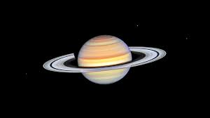

All the planets in our solar system
Starting with earth

Earth
Approximate Diameter: 7,917.5 mi
Fun Fact: Earth isn't actually round.

Mars Approximate Diameter: 6790 kilometers
Fun Fact: One day on Mars takes a little over 24 hours.

Approximate Diameter: 86,881 mi
Fun Fact: Jupiter Has 67 Moons

Mercury Approximate Diameter: 3,031.9 mi
Fun Fact:Mercury is the closest planet to the Sun

Neptune
Approximate Diameter: 30,599 mi
Fun Fact: Neptune was the first planet located using math.

Saturn Approximate Diameter: 74,898 miles
Fun Fact: A day on Saturn is 10.7 hours.

sun Approximate Diameter:865,370 mi
Fun Fact: The Sun is about 100 times wider than Earth and about 10 times wider than Jupiter, the biggest planet.
Uranus Approximate Diameter: 31,518 mi
Fun Fact: Uranus has a unique tilt that makes it appear to spin sideways.

Venus Approximate Diameter:7,520.8 mi
Fun Fact: Venus is a bit smaller than Earth. ...